A maior feira de artesanato das Américas
Esta exposição nasce inspirada na Fenearte — Feira Nacional de Negócios do Artesanato, encontro que reúne mestres e mestras de todo o Brasil. Aqui reunimos 30 histórias para olhar de perto o gesto, a técnica e a memória por trás de cada peça.
Um convite para contemplar sem pressa: cada mestre é uma porta de entrada para uma região, um ofício e um modo de contar o Brasil com as mãos.
Mestres, artistas e artesãos da mostra
Toque em uma plaquinha para ler a história completa, ver o que observar na peça e consultar as referências reunidas ao final.
30 perfis · barro, madeira, couro, cerâmica e gravura
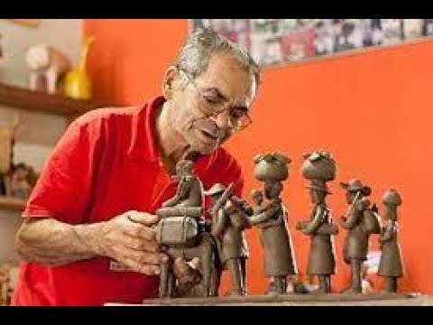
Manuel/Manoel Eudócio
Alto do Moura, Caruaru (PE)◆1931–2016
O barro do Alto do Moura transformado em cena, memória e povo.
Conhecer a história →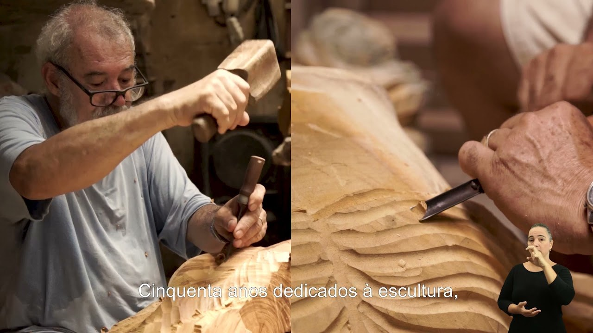
Mestre Nicola
Quipapá; Jaboatão dos Guararapes (PE)◆Atuação contemporânea
Arte sacra, devoção e escultura barroca em linguagem popular.
Conhecer a história →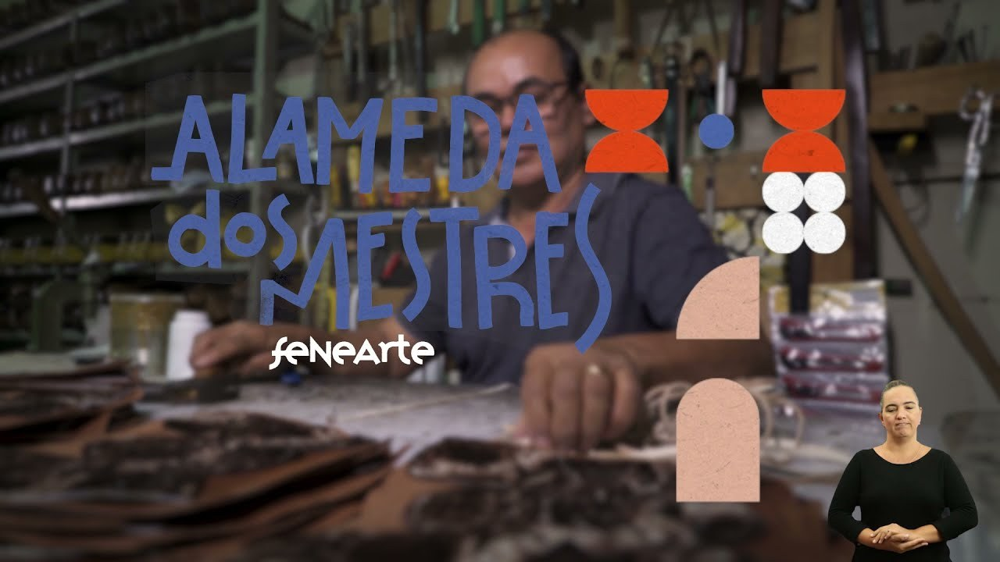
Mestre Seu Neném
Serra Talhada (PE)◆Atuação contemporânea
O couro sertanejo costurado em bolsas, cintos, calçados e memória familiar.
Conhecer a história →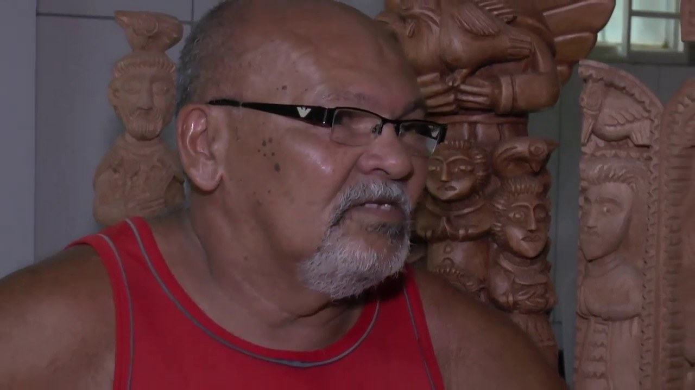
Mestre Cornélio
Piauí◆Nascido em 1955; atuação superior a 40 anos
A madeira talhada como fé, forma e poesia visual.
Conhecer a história →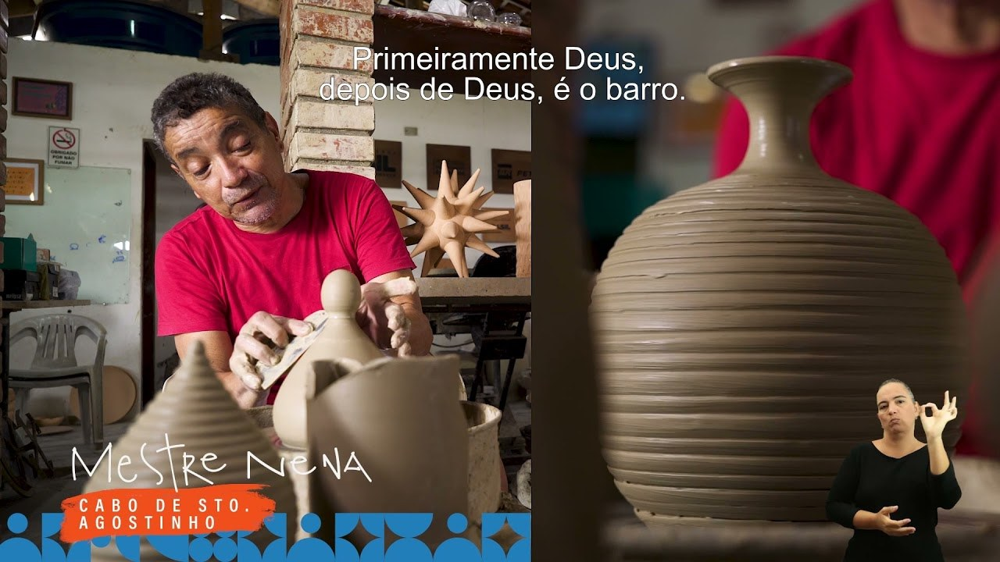
Mestre Nena
Cabo de Santo Agostinho (PE)◆Nascido em 1964; atuação contemporânea
Cerâmica vermelha entre tradição, acabamento e invenção contemporânea.
Conhecer a história →
Mestra Maria Amélia da Silva
Tracunhaém (PE)◆Nascida em 1925; atuação registrada até a década de 2020
A força santeira de Tracunhaém, moldada desde a infância.
Conhecer a história →
Benedito Santeiro
Olinda (PE)◆1937–1998
O mestre da madeira cujo legado segue vivo nas mãos de Rosalvo.
Conhecer a história →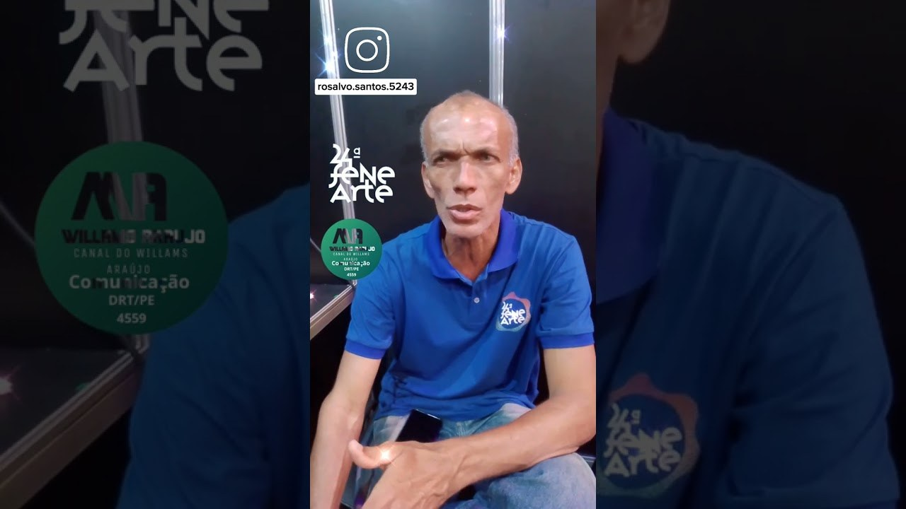
Mestre Rosalvo
Olinda (PE)◆Atuação contemporânea; continuidade do legado de Benedito Santeiro
Santos sorridentes e retirantes em madeira: uma herança continuada.
Conhecer a história →Mestre Marcos Siqueira
Garanhuns (PE)◆Atuação contemporânea
Santos estilizados, humor visual e identidade artística própria.
Conhecer a história →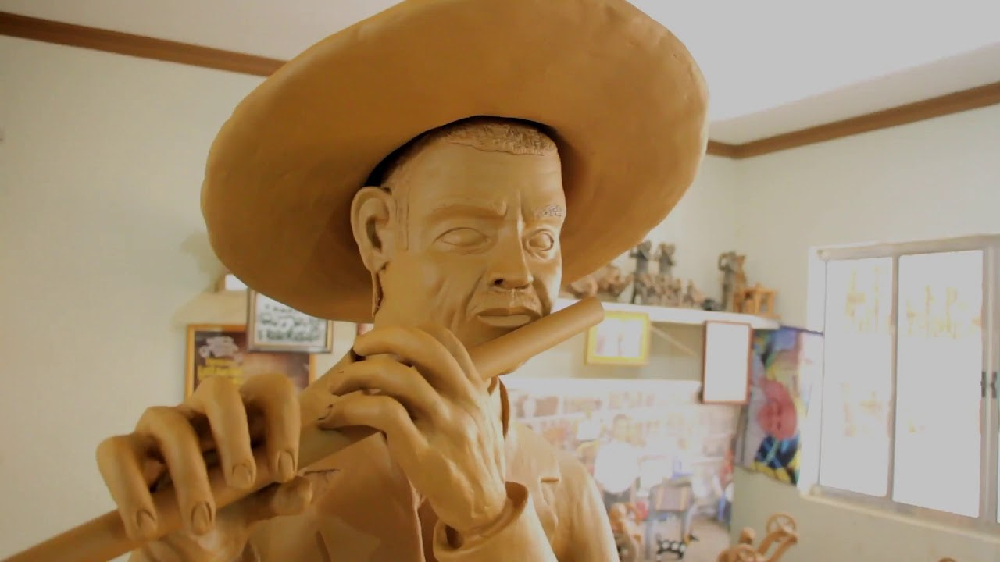
Mestre Luiz Antônio
Alto do Moura, Caruaru (PE)◆Nascido em 1935; atuação contemporânea registrada
A continuidade do barro do Alto do Moura depois de Vitalino.
Conhecer a história →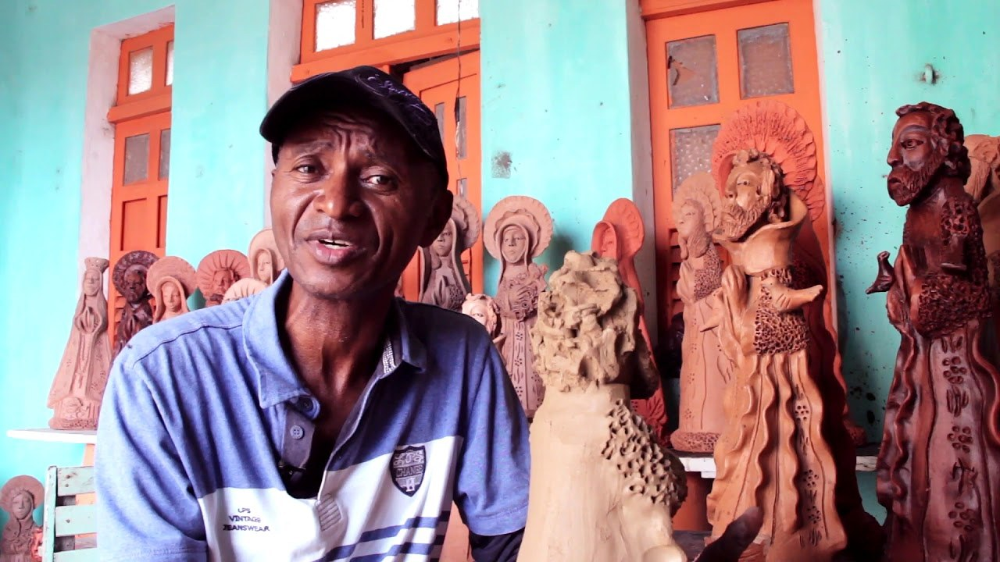
Mestre Zuza
Tracunhaém, Mata Norte (PE)◆Atuação contemporânea
Santos de barro com rosto nordestino e resplendor de festa popular.
Conhecer a história →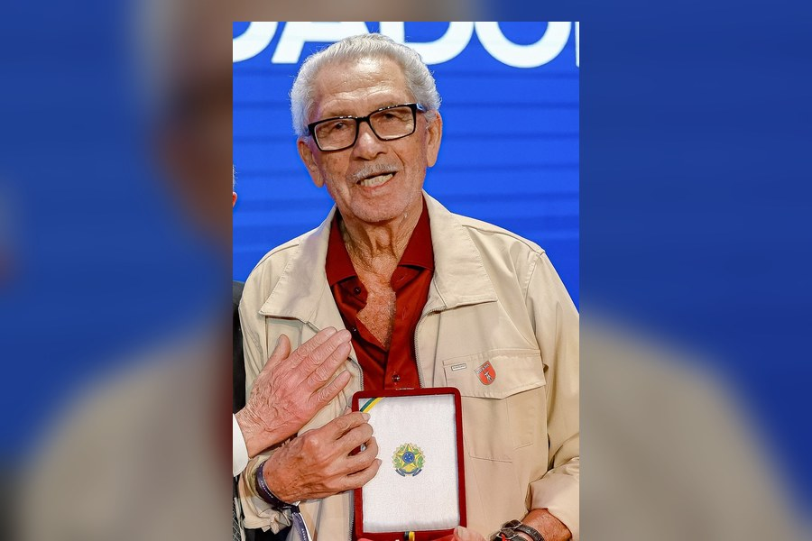
Mestre Espedito Seleiro
Arneiroz e Nova Olinda (CE)◆Nascido em 1939; atuação contemporânea
O couro do Cariri entre vaqueiros, cangaço, moda e desenho autoral.
Conhecer a história →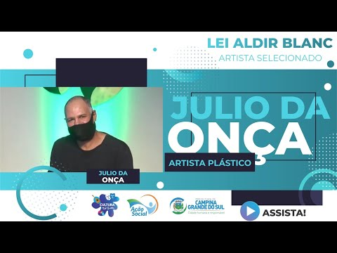
Júlio das Onças
Campo Grande (MS), entorno da Lagoa Itatiaia◆Atuação registrada desde 1990; dados de nascimento/falecimento ainda a confirmar
A onça pantaneira transformada em escultura, movimento e presença popular.
Conhecer a história →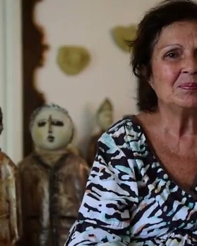
Henriqueta Targino
Pernambuco; circulação na Fenearte e em Recife◆Atuação registrada ao menos desde a década de 2000; presença na Fenearte 2015
Peças autorais como refúgio, identidade e alegria de criar.
Conhecer a história →Miguel dos Santos
Caruaru (PE), Palmeira dos Índios (AL) e João Pessoa (PB)◆Atuação do século XX ao XXI; dados de nascimento a conferir em catálogo
Do barro ao mito: cerâmica, pintura e imaginação afro-barroca.
Conhecer a história →FRS — Francisco Rosa dos Santos
Rio Branco do Sul e Curitiba (PR)◆Nascido em 1967; atuação contemporânea
Sinaleiros do vento: madeira pintada, movimento e continuidade familiar.
Conhecer a história →POS
Procedência a confirmar◆Identificação biográfica ainda não confirmada
Iniciais preservadas como pista de autoria.
Conhecer a história →Fido — provável Mestre Fida
Garanhuns (PE), se confirmada a identificação como Mestre Fida◆Mestre Fida nasceu em 1957; identificação da peça ainda a confirmar
“Fido” pode ser grafia ou leitura variante de Mestre Fida, criador do Homem Cata-Vento; a identificação ainda pede conferência visual da peça.
Conhecer a história →Irinéia Rosa Nunes e Antônio Nunes
Povoado quilombola de Muquém, União dos Palmares (AL)◆Irinéia nasceu em 7 de janeiro de 1949; Antônio Nunes faleceu em 2020
Ancestralidade quilombola modelada no barro do Muquém.
Conhecer a história →Nuca de Tracunhaém
Nazaré da Mata e Tracunhaém (PE)◆1937–2014
O leão de barro que virou emblema da cerâmica pernambucana.
Conhecer a história →Paquinha
Teresina (PI)◆Nascido em 18 de janeiro de 1957; atuação contemporânea
Múltiplos em madeira: pequenas arquiteturas narrativas do entalhe piauiense.
Conhecer a história →Mestre Galdino
São Caetano e Alto do Moura, Caruaru (PE)◆1924–1996; há referência alternativa para 1929–1996
O fantástico e o grotesco no barro do Alto do Moura.
Conhecer a história →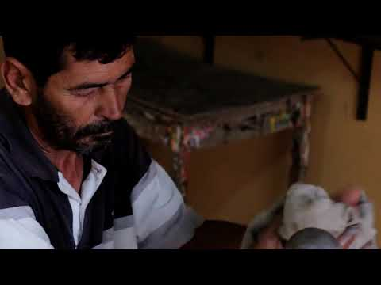
Joel Galdino
Alto do Moura, Caruaru (PE)◆Atuação contemporânea
A linhagem de Galdino continuada em novas criaturas de barro.
Conhecer a história →Mirtes Rufino
Santarém (PA) e Porto Velho (RO)◆Atuação em Porto Velho desde 1988; falecida em 2017
Madeira, tecido e látex transformados em povos da floresta.
Conhecer a história →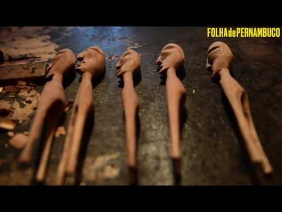
Zé Alves de Olinda
Recife e Olinda (PE)◆Nascido em 1953; atuação contemporânea
Madeira, personagem e imaginação popular nascidos para ganhar a rua.
Conhecer a história →J. Borges
Bezerros (PE)◆1935–2024
A xilogravura do cordel como imagem maior do Nordeste.
Conhecer a história →Gilvan Samico
Recife e Olinda (PE)◆1928–2013
Xilogravura, mito, cordel e rigor armorial.
Conhecer a história →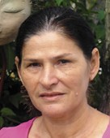
Nené Cavalcanti
Alagoa Nova e João Pessoa (PB)◆Nascida em 1948; quase 40 anos de produção artística
Bonecas de cerâmica que atravessam intimidade, humor e reconhecimento.
Conhecer a história →Adelaide e Tê Cavalcanti
Paraíba; núcleo das Irmãs Cavalcanti e vínculos com Alagoa Nova/João Pessoa◆Atuação contemporânea; Tê retomou a produção artística em 1993
Irmãs, família e transmissão feminina do ofício.
Conhecer a história →
Mestre Cabral
Olinda (PE)◆Nascido em 19 de fevereiro de 1953; 57 anos de arte em 2025
Madeira, natureza e carnaval talhados em Olinda.
Conhecer a história →Como usar os QR codes
Cada peça exposta tem uma plaquinha com um QR code. Ele leva à página do mestre correspondente, com a história e o que observar.
Abra a câmera
Use a câmera do celular ou um leitor de QR code. Não é preciso instalar nada.
Aponte para a plaquinha
Enquadre o QR code ao lado da peça. Um aviso com o link vai aparecer na tela.
Toque no link
A página do mestre abre no navegador, com letras grandes e leitura confortável.
Leia com calma
Veja a história em blocos curtos e a seção “Para observar na peça” diante do original.
Sobre a revisão editorial
Os textos foram revisados para manter a leitura fluida: as referências ficam reunidas ao final das páginas e não interrompem a narrativa biográfica. Buscou-se preservar o sentido dos registros, sem inventar fatos nem reproduzir trechos longos.
Algumas identificações trazem notas curatoriais específicas: quando há mais de uma grafia ou quando a atribuição depende da peça exposta. Antes da impressão das plaquinhas e dos QR codes finais, todo o conteúdo deve ser conferido pela equipe da Métis Academia da Mente.
Operacional: Perfis revistos editorialmente em julho de 2026. Em 02/07/2026, foi adicionado suporte a carrossel visual e links de Instagram oficial/institucional quando localizados. Novas fotos de peças podem ser incorporadas pela curadoria no campo galeria. POS permanece sem identificação pública confiável e Fido/Mestre Fida requer confirmação visual da peça. Total atual: 30 perfis.